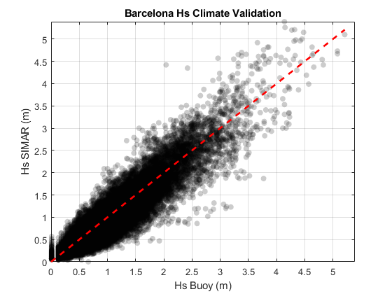
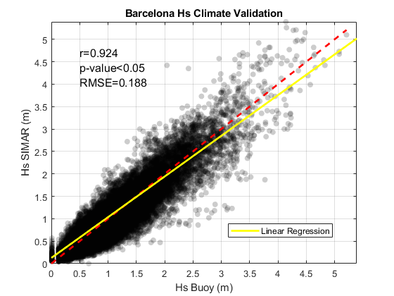
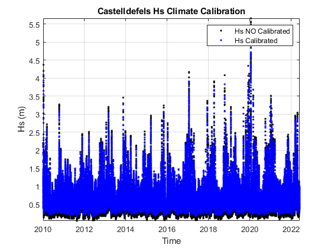

Contents
clear all, close all, clc % Author: Albert Gallego Jiménez % Date: 25/06/2022
=== Script for Validation-Calibration of wave data ===
% This script validates and calibrates the wave height data (Hs) generated by numerical % modelling (hindcast) named SIMAR, by using instrumental data (buoy). Our % study area is in Castelldefels and our validation-calibration site is in % Barcelona's Port, approx 15 km separated. % Both SIMAR and buoy data are publicly provided by Puertos del Estado (https://www.puertos.es/es-es/oceanografia/Paginas/portus.aspx) % Summarising: % - "Castelldefels": study area of the project. % - "Barcelona": location where the validation take place. % - "SIMAR": Wave data from numerical model that needs to be % validated-calibrated (available in Barcelona and Castelldefels). % - "Buoy": Instrumental data used to validate-calibrate the numerical % modelled data (only available in Barcelona).
0- Load the data
%SIMAR data in Castelldefels waves_SIMAR_cdf = readtable('D:\Capstone Project\Wave data\waves_simar_cdf.csv'); %SIMAR data in Barcelona (at the same coordinates where the buoy is) waves_SIMAR_bcn_buoy = readtable('D:\Capstone Project\Wave data\waves_simar_bcn_buoy.csv'); % Buoy data in Barcelona waves_buoy_bcn = readtable('D:\Capstone Project\Wave data\waves_buoy_bcn.csv');
1- Clip the SIMAR data by the temporal extent of the buoy data
timebuoy = datetime(table2array(waves_buoy_bcn(:,1:6))); timeSIMAR = datetime(table2array(waves_SIMAR_bcn_buoy(:,1:6))); %Find the indexes with the common dates in both data sources. [~,idbuoy,idSIMAR] = intersect(timebuoy,timeSIMAR); %Extract the Hs wave parameter that needs to be validated-calibrated hsSIMAR_idSIMAR = table2array(waves_SIMAR_bcn_buoy(idSIMAR,'Hs')); hsBuoy_idbuoy = table2array(waves_buoy_bcn(idbuoy,'Hs'));
2- Fit the SIMAR data and Buoy data with a Linear Regression Model
mdl_lr = fitlm(hsSIMAR_idSIMAR,hsBuoy_idbuoy); %Here calibrates the SIMAR data in Castelldefels with above model. hs_cdf_cal = predict(mdl_lr,table2array(waves_SIMAR_cdf(:,'Hs'))); %Extract some statistics [r,p] = corrcoef(hsBuoy_idbuoy,hsSIMAR_idSIMAR); if p(2)<0.05 str_p = "p-value<0.05"; else str_p = round(p(2),2); end str_stats = {["r="+num2str(round(r(2),3))],str_p,["RMSE="+num2str(round(mdl_lr.RMSE,3))]};
3- Plots:
3a- Plot Bcn Hs Data
figure('Name','Scatter plot - Hs Buoy vs Hs SIMAR') scatter_hs = scatter(hsBuoy_idbuoy,hsSIMAR_idSIMAR,'k','filled'); alpha(scatter_hs,0.2) hold on plot(linspace(0,max(hsBuoy_idbuoy),500),linspace(0,max(hsBuoy_idbuoy),500),'--r','LineWidth',2) xlim([0 max(hsSIMAR_idSIMAR)]);ylim([0 max(hsSIMAR_idSIMAR)]) grid on; box on xlabel('Hs Buoy (m)');ylabel('Hs SIMAR (m)') title('Barcelona Hs Climate Validation') figure('Name','Fit with Linear Regression Model') scatter_hs = scatter(hsBuoy_idbuoy,hsSIMAR_idSIMAR,'k','filled'); alpha(scatter_hs,0.2) hold on plot(linspace(0,max(hsBuoy_idbuoy),500),linspace(0,max(hsBuoy_idbuoy),500),'--r','LineWidth',2) hold on lr = plot(linspace(0,max(hsSIMAR_idSIMAR),100)',predict(mdl_lr,linspace(0,max(hsSIMAR_idSIMAR),100)'),'-y','LineWidth',2); xlim([0 max(hsSIMAR_idSIMAR)]);ylim([0 max(hsSIMAR_idSIMAR)]) grid on; box on text(0.5,max(hsSIMAR_idSIMAR)-1,str_stats,'HorizontalAlignment','left','FontSize',12) xlabel('Hs Buoy (m)');ylabel('Hs SIMAR (m)') legend(lr,'Linear Regression','Location','best') title('Barcelona Hs Climate Validation') 
3b- Plot Castelldefels Hs Data
timeSIMAR_cdf = datetime(table2array(waves_SIMAR_cdf(:,1:6))); figure('Name','Time series - Hs SIMAR Calibrated and Hs SIMAR NO Calibrated') plot(timeSIMAR_cdf,table2array(waves_SIMAR_cdf(:,'Hs')),'.k') hold on plot(timeSIMAR_cdf,hs_cdf_cal,'.b') axis tight grid on xlabel('Time');ylabel('Hs (m)') legend('Hs NO Calibrated','Hs Calibrated') title('Castelldefels Hs Climate Calibration')
4- Save the calibrated wave data
waves_SIMAR_cdf(:,'Hs') = array2table(hs_cdf_cal); writetable(waves_SIMAR_cdf,'D:\Capstone Project\waves_simar_cdf_cal.csv','Delimiter',';');